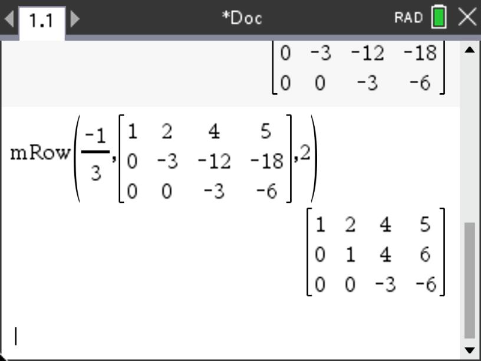
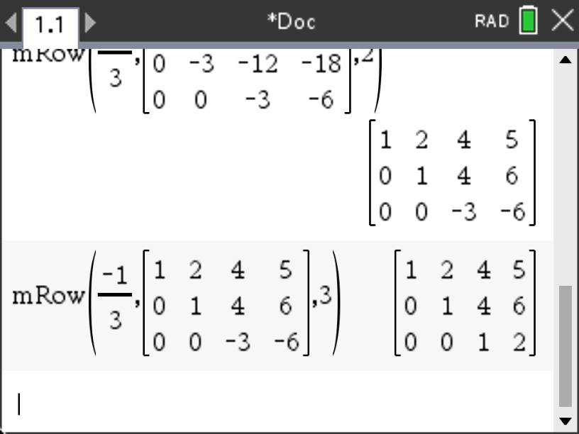

In this section we will explore processes surrounding solving systems of linear equations. In the last section, we ended by experimenting with various scalars to determine if a set of vectors were linearly independent. Mostly we used trial and error or tried to reduce the linear combinations by chosing a value for one of the scalars and then working backwards to find the remaining scalars. This was a time-consuming process and can often be challenging if there is a unique solution. In this section, we will try a more systematic approach that will help us find the desired scalars more efficiently.
As we ended section 2.1, we wanted to establish whether or not a set of vectors was linealry independent. To do this, we needed to determine whether or not we could find a set of scalar values that would give us a linear combination for other vectors in the set. In addition, we sought to determine the if a vector was in the Span of a set of vectors. For both of these questions, we ultimately want to solve for specific scalars that would meet our desired requirements.
While this process of finding scalars may seem new, it is actually not a new idea. Recall that in high school we solved systems of equations using a variety of techniques including substitution, elimination, and graphing. As the number of variables and equations increased, the techniques of substitution and graphing became very challenging. The process of elimination was generally easier as the number of variables increased and so this process is the one we will refine here.
You may recall that there were certain operations we could perform on equations so that their solution sets did not change. These included multiplying an equation by a nonzero constant, adding equals to equals, and rearranging the equations. For example, since, say, \(5=5\text{,}\) we can also say that \(2\cdot5=2\cdot5\text{.}\) Similarly for an equation like \(x+2y=5\) (for which a solution is clearly \(x=1\) and \(y=2\)), then if we multiply both sides by, say 3, we get \(3\left(x+2y=5\right) \Rightarrow 3x+6y=3\cdot5\Rightarrow 3x+6y=15\text{.}\) Just as \(x=1\) and \(y=2\) is a solution to the original equation, due to the fact that multiplying both sides of an equation by the same value gives a new equation that is also true, \(x=1\) and \(y=2\) is also a solution to \(3x+6y=15\) (i.e. \(3\cdot1+6\cdot2=3+12=15\)).
In a similar fashion, if we start with \(x+2y=5\) and add the same amount to both sides, we get \(x+2y+7=5+7 \Rightarrow x+2y+7=12\text{.}\) If we plug in \(x=1\) and \(y=2\) we get \(1+2\cdot2+7=1+4+7=12\text{.}\) In both cases, if we start with an equation with a certain solution, adding the same constant to both sides or multiplying both sides by the same constant will give a new equation for which the solution to the original equation will be a solution to the new equation.
What if we want to add expressions to both sides of an equation? Consider another equation, \(4x+y=6\text{,}\) that also has a common solution, \(x=1\) and \(y=2\text{.}\) If we add this equation to or earlier equation, \(x+2y=5\text{,}\) we get
where \(x=1\) and \(y=2\) is still a solution to the result, \(5x+3y=11\) (see Figure 2.2.1). What this tells us is that if we seek solutions to a system of equations, we can add any of the equations in the system to each other and get a new equation that also shares the same solution(s) as the previous equations.
Figure2.2.1.Three Lines
So now suppose we did not know that the solution to our earlier set of equations, \(x+2y=5\) and \(4x+y=6\text{,}\) was \(x=1\) and \(y=2\text{.}\) How do these manipulations that yield new equations with the same solution help us? As you may recall from your earlier mathematics experiences, we can take the approach of trying to "eliminate" a variable from the system so that we can more easily solve for one of the variables. In this case, consider what would happen if we multipled the top equation by -4. This would give us a new equation, \(-4x-8y=-20\text{,}\) and we can use it in place of the original one. Why multiply it by -4? As we saw, if two equations share the same solution(s), we can add them and the resulting equation will also have the same solution(s). The -4 was selected since it will give a coefficient of \(x\) that is the opposite of the coefficient of \(x\) in the second equation so that when added they will cancel each other to leave us only the variable \(y\text{.}\)
Now we can simply plug \(y=2\) into either of our original equations to get a value for \(x\text{.}\) Let’s use the first equation as it is easier to solve for \(x\text{.}\) This gives \(x+2\cdot2=5\) which yields \(x+4=5 \Rightarrow x=1\text{.}\)
Now consider the following example where we use this process to find scalars for a linear combination of vectors.
Example2.2.2.Finding Scalars.
Consider a more simplified version of our scenario from Chapter 1 involving prices, \(p\) and revenue \(r\) for products we are selling to various companies. In this case, we consider fewer companies and products to make this example easier to disect. Suppose we have the following data for the number of items for two different products for two different companies.
Table2.2.3.Product Orders
Clients
Product 1
Product 2
Company 1
2
3
Company 2
1
5
In this case we are looking for scalars for prices, \(p_1\) and \(p_2\text{,}\) that provide desired revenues, \(r_1\) and \(r_2\text{.}\) This gives the following vector equation.
A question we might ask is what prices do we need to set so that we have revenue of $43 from Company 1 and $46 from Company 2? It may be that there are no such price combinations that will yield what we want (i.e. does this combination exist?). There may be a case where there are infinitely many such price combinations (i.e. there is not uniqueness). These two fundamental questions of existence and uniqueness will be ones we revisit as we seek solutions to equations.
So now we ask if we can find solutions to the vector equation, \(p_1 \begin{bmatrix}
2\\1\end{bmatrix} + p_2 \begin{bmatrix}
3\\5\end{bmatrix} = \begin{bmatrix}
43\\46\end{bmatrix}
\text{?}\)
However, this is not such an unusual task. Recall from high algebra we solved these equations before, but they were simply written in a different form. This vector equation could also be written as
\begin{equation*}
2p_1+3p_2=43
\end{equation*}
\begin{equation*}
p_1+5p_2=46
\end{equation*}
Now we can use the process of Gaussian elimination to reduce these equations to only one variable. Suppose we multiply the second equation by \(-2\) and add the resulting equations to obtain the following.
Now we can use our value for \(p_2=7\) in one of our original equations (let’s use the second one since it is easier) to get \(p_1+5\cdot7=46\) which gives \(p_1=46-35=11\text{.}\)
Checking this result we get \(11\cdot \begin{bmatrix}
2\\1\end{bmatrix} + 7\cdot \begin{bmatrix}
3\\5\end{bmatrix} = \begin{bmatrix}
43\\46\end{bmatrix}
\text{.}\)
Activity2.2.1.
Consider the following system of equations.
\begin{equation*}
\begin{array} 3
x + 2y + z =-1 \\
2x - y + 3z =6 \\
-x + 4y - z =-5
\end{array}
\end{equation*}
(a)
Use the process of Gaussian elimination to reduce the system of 3 equations and 3 unknowns to a system of 2 equations and 2 unknowns by scaling and/or adding pairs of these equations.
(b)
Now eliminate another of your two remaining variables from part (a) in similar manner (scaling and/or adding pairs of these equations) to find a solution value for one of the three variables.
(c)
Use your value from part (b) and one of your equations found in part (a) to solve for a second unknown.
(d)
Use the two values you have found so far along with one of your original equations to solve for the last unknown.
(e)
Use the GeoGebra applet in Figure 2.2.4 to verify your solution to the system. Feel free to rotate the planes so that the intersection point of all three is visible.
Figure2.2.4.3D System of Equations
Now that we have worked through a process to reduce a system of equations to fewer and fewer variables, we can summarize the operations that changed the look of the equations without changing the solutions. We essentially have three types of "moves" we can do that will create equivalent systems of equations that maintain the same solutions as the original system.
Scaling
In this situation, we can multiply an entire equation by a constant and not change the solutions. For example, \(\frac{1}{2} \left(2x+4y=8\right) \Rightarrow x+2y=4\) will have the same solutions as the original, \(2x+4y=8\text{.}\)
Swapping
Here we are allowing the position of the listed equations within the system to be simply swapped. This principle is kind of obvious since the two systems of equations
In this situation, we found that if we multiply one equation by a scalar (even if it is just 1) and add it to another equation and use this result in place of the equation we added the scalar multiple to, the solutions to the system remain the same. For example, we can take a system like
and we will still have the same solution, \(x=-1\) and \(y=2\text{,}\) be the solution to both systems.
As you may have noticed in both of these examples for solving a system with Gaussian elimination, to make it easier to manipulate and perform operations on the equations, we made it a practice to keep the variables aligned with each other and then performed the multiplication by scalars and addition of equations using the three "moves" described above. This helped us make sure we were not accidently adding the coefficients of different variables together. For the most part, this practice just makes "bookkeeping" easier. This should sound kind of familiar. We did the same thing in Chapter 1 when we introduced vectors and matrices. We viewed these arrays of elements as an easier way to keep track of corresponding components that represented values for the same type of quantities (e.g. orders of the same product, price of the same product, revenue from the same company) without needing to label them. So the natural question is, do we need to write the variable name if we already know which variable is associated with which column in our "stacked" representation of the equations? The answer is a resounding, no! So let’s consider what would happen if we were to forego the writing of the variable names.
Subsection2.2.2Augmented Matrices and Stripping Away Variable Names
When we look at the general structure we have been using for our equations in the Guassian elimination process, we wanted our equations to be of the form, \(5x_1+3x_2+2x_3=-7\text{,}\) where the variables are all on the left side of the equation and the right side contains only a numerical value. If we assume this structure for our equations, we can define them in the following way.
Definition2.2.5.
A linear equation in the variables, \(x_1, x_2, x_3, \ldots, x_n\) may be written in the form \(a_1x_1+a_2x_2+a_3x_3+\cdots+a_nx_n=b\) where the real numbers represented by \(a_1,a_2,\ldots,a_n\) are called coefficients and \(b\) is a constant real number.
When we have several such equations that share common variables, we say that it is a system of linear equations or, more simply, a linear system.
Recall from Section 1.1, we began by looking at systems of equations from the standpoint of transformations.
Here we are separating out the variable names into a single vector and the coefficients are isolated into a matrix. If you wanted to give a name to this matrix, you might call it...you guessed it, a coefficient matrix.
Activity2.2.2.From Equations to Matrix Transformation.
Express this system of equations as a coefficient matrix multiplied by a \(3\times1\) vector that is equal to another \(3\times1\) vector.
(b)
Use your System of Equations command on your CAS to solve this system for \(x_1\text{,}\)\(x_2\text{,}\) and \(x_3\text{.}\)
(c)
Use the solutions you found in part (b) to show that the matrix-vector equation you created in part (a) is true by multiplying your coefficient matrix by the vector made up of the components from your solutions.
In the last activity, you took a system of equations and converted it into a coefficient matrix, a vector whose components represented the variables, and another vector whose components represented the values from the right-hand side of the equations. From Chapter 1, we viewed these equations as transformations and in this section we used Gaussian elimination to find solutions for the variables in the equations (see Example 2.2.2 and Activity 2.2.1). So how are these connected? Think back to our use of Gaussian elimination. What did we really manipulate? We kept the variables aligned for convenience and multiplied entire equations by scalar values and from time to time added equations together. However, the only things we really changed in the process were the values of the coefficients (the very things that become isloated in the coefficient matrix in our transformation version of the equations). So the natural question is, why do we waste our time writing down the variable names if we are just going to keep them aligned anyway. Instead, why don’t we simply work with the numerical values of the coefficients?
To enable us to more easily work with the solution process, we can tweak our coefficient matrix just a bit, so that the numerical values from the right-hand side of our equations (which do change as we manipilate) are also included. We can simply augment our coefficient matrix with these values. Consider the system of equations given below. We can use the processes of scaling equations and adding them together like in Activity 2.2.2 to try and simplify the system to find solutions.
In this case we can create the coefficient matrix and then augment it with an additional column containing the values from the right-hand side of the equations. In this case we get
Once we have reduced the equations to an augmented matrix with the coefficients on the left side of the bar and the numerical values from the right side of the equations on the right side of the bar, we can use the process we used earlier to operate on the matrix and reduce it to a simplified form. Recall that before, we wanted to eliminate variables so that we could get an equation with just one variable in it. Here we will do the same, but instead, we wish to manipulate the matrix so that we have entries that are zero in locations (this is like eliminating the variable from that particular equation). Note that the rows represent equations and the columns represent the variables, \(x_1\text{,}\)\(x_2\text{,}\) and \(x_3\text{,}\) respectively.
Suppose we want to eliminate the variable, \(x_1\text{,}\) from the second row (equation). As we did earlier, we can multiply the first row (equation) by \(-4\) and add it to the second row and use the new resulting row (equation) to replace the old version of the second row. This would give us the following.
This can also be done step-by-step on most basic graphing calculators. In this case, the first entry in the \(\mathbf{mRowAdd}\) command is the scalar (-4), followed by the matrix, then the row that is being scaled (row 1), and finally the row that is being added to and thus \(\mathbf{replaced}\) (row 3).
Now we can do the same thing for the third row multiplying Row 1 by \(-2\) and adding it to Row 3 and replacing Row 3 with the result.
At this point, we can begin to back-solve since the last row represents an equation that contains only the variable \(x_3\text{.}\) Once we have this value, we can use it in \(R_2\) since it now has entries representing \(x_2\) and \(x_3\) and inserting our value for \(x_3\) leaves just \(x_2\text{.}\) Finally, we then use the values we have obtained for \(x_2\) and \(x_3\) in the first row to get our value for \(x_1\text{.}\)
From this version of the augmented matrix, we can see that \(-3x_3=-6\) and so \(x_3=2\text{.}\) As a result, we can see that \(-3x_2-12\cdot2=-18\) and so \(x_2+4\cdot2=6 \Rightarrow x_2=6-8=-2\text{.}\) Using the first row with these values gives us \(x_1+2\cdot-2+4\cdot2=5 \Rightarrow x_1-4+8=5\text{.}\) This results in \(x_1=5+4-8=1\text{.}\)
The fact that our matrix has zeros in the lower left that enable us to easily back-solve means that this kind of matrix is special and thus deserves a special name. We refer to this structure of a matrix as upper triangular since the nonzero values of the coefficient matrix portion of the augmented matrix form a triangle.
If we want, we could make our back-solving easier by scaling the last two rows. If we multiply both the second and third rows by \(-\frac{1}{3}\text{,}\) we get
Here the \(\mathbf{mRow}\) command first takes the scalar, followed by the matrix and then the row that is being scaled.


From this version of the augmented matrix, we can more easily see that \(x_3=2\text{.}\) As a result, we can see that \(x_2+4\cdot2=6\) and so \(x_2=6-8=-2\text{.}\) Using the first row with these values gives us \(x_1+2\cdot-2+4\cdot2=5 \Rightarrow x_1-4+8=5\text{.}\) This results in \(x_1=1\text{.}\)
You may notice that we can continue to use these manipulation processes to further reduce this matrix so that the "back-solve" process will be even easier. For example, wouldn’t it be great if we could get the matrix into the form
where we can easily read off the solutions since each row has a 1 in the position of a different variable and zeros everywhere else (i.e. no other substitutions to make)? We will address this later in this section.
Convert the system of equations into an augmented matrix.
(b)
Use Gaussian Elimination to reduce your augmented matrix to one that is in upper triangular form. Be sure to indicate your process at each stage by using notation such as \(\overset{5R_1+R_3 \rightarrow R_3}{\longrightarrow}\) or \(\overset{R_1 \leftrightarrow R_3}{\longrightarrow}\text{.}\) Feel free to use technology (e.g. \(\mathbf{mRowAdd}\) command) to perform the arithmetic, but make sure to show your stages in the reduction process.
(c)
After you have solved for one of the values of the unknowns, back-solve to find the remaining unknown values.
Now that we have converted a system of equations to augmented matrix form and then used the process of Gaussian elimination to reduce the system and find solutions, we might ask the question, will we always be able to reduce the matrix to a nice upper triangular form where back-solving to obtain a unique solution is possible? As you will recall from Project 2.1.2, not all linear combinations of vectors (and thus systems) end with a unique solution. This means that it will not always be able to find a unique solution to a given system of equations and thus get a nice upper triangular matrix. In the next section, we will examine how we can describe the set of solutions for linear systems to determine whether or not the solution(s) is (are) unique, infinite, or non-existent by simplying looking at a reduced version of the matrix.